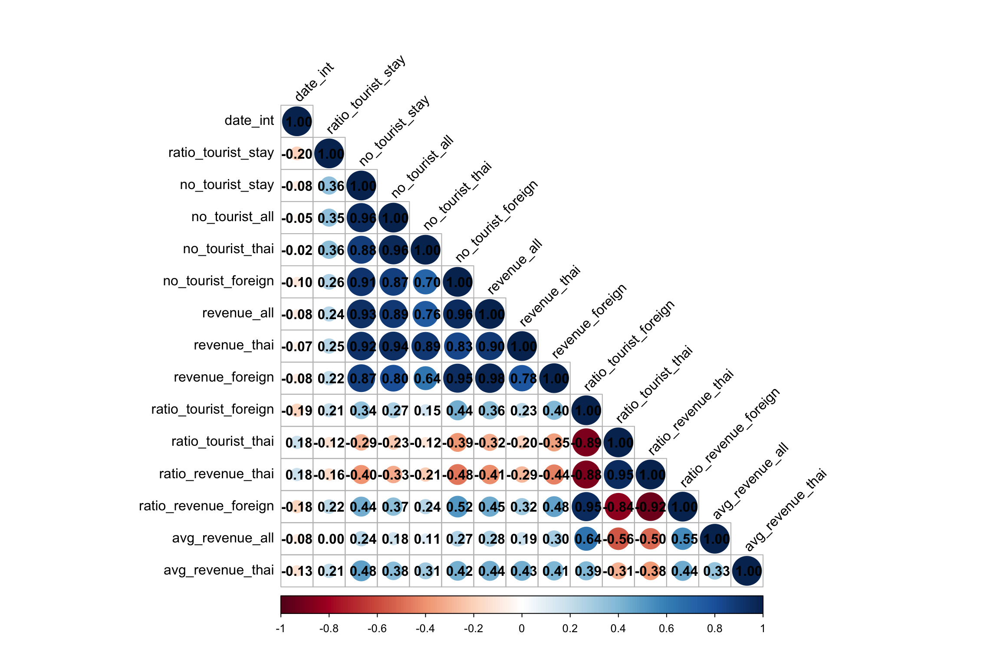
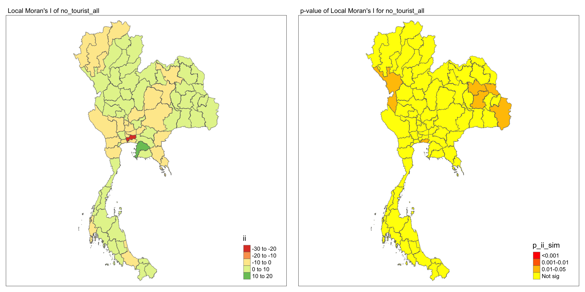
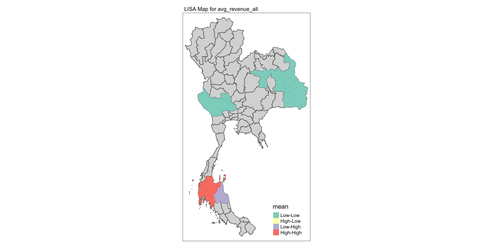
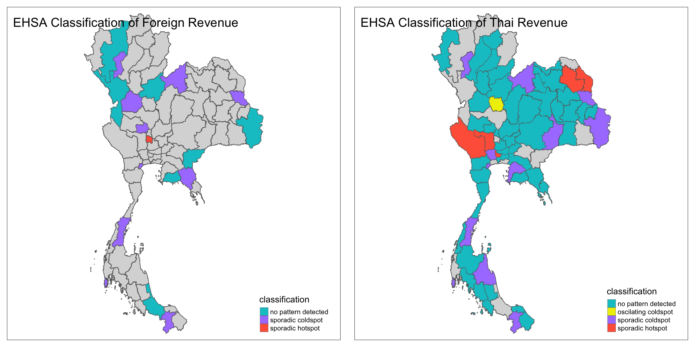

pacman::p_load(tidyverse, sf, spdep, sfdep, tmap, knitr, DT, ggplot2, plotly, RColorBrewer, corrplot)Take Home Exercise 2
In this exercise, we will explore how COVID-19 affected Thailand’s tourism economy using spatial and spatio-temporal analysis, focusing on how the impacts varied across different provinces and examining recovery patterns.
1 Assignment Task
2 Overview
Tourism is a major industry in Thailand, accounting for about 20% of the GDP. In 2019, the sector generated 90 billion USD, but this dropped sharply to 24 billion USD in 2020 due to the COVID-19 pandemic. Notably,tourism revenue is also unevenly distributed, with provinces like Bangkok, Phuket, and Chiang Mai dominating the sector, while others see less impact.
In this exercise, we will explore how COVID-19 affected Thailand’s tourism economy using spatial and spatio-temporal analysis, focusing on how the impacts varied across different provinces and examining recovery patterns.
3 Objectives
The main objectives of this exercise are:
- Determine if the key indicators of tourism economy of Thailand are independent from space and space and time.
- If the tourism economy shows spatial and spatio-temporal dependence, identify clusters, outliers, and emerging hotspot/cold spot areas.
4 Methodology
In this exercise, we will follow these steps:
-
Geospatial Data Preparation: Using
sfandtidyversepackages to create spatial and spatio-temporal datasets, specifically:
- a province level study area layer of Bangkok in sf polygon features
- a tourism economy indicators layer within the study area in sf polygon features.
- a derived tourism economy indicator layer in spacetime s3 class of sfdep. The time series will be at month and year levels.
Global Spatial Autocorrelation Analysis: Using
sfdepmethods to identify spatial patterns in the tourism economy.Local Spatial Autocorrelation Analysis: Detecting clusters and outliers at the provincial level.
Emerging Hotspot Analysis: Applying spatio-temporal analysis to identify trends in tourism revenue recovery or decline.
5 The Data
We will use two primary datasets for this analysis:
| Dataset Name | Description | Format | Source |
|---|---|---|---|
| Thailand Domestic Tourism Statistics | Monthly tourism statistics, including revenue and visitor numbers at the province level. | CSV | Kaggle |
| Thailand - Subnational Administrative Boundaries | Geospatial data of provincial boundaries in Thailand. | ESRI Shapefile | HDX |
6 Installing and Launching the R Packages
The following R packages will be used in this exercise:
| Package | Purpose | Use Case in Exercise |
|---|---|---|
| sf | Handles spatial data; imports, manages, and processes vector-based geospatial data. | Importing and managing geospatial data, such as Hunan’s county boundary shapefile. |
| sfdep | Provides functions for spatial autocorrelation and temporal analysis, including Emerging Hot Spot Analysis (EHSA). | Performing spatio-temporal analysis using Gi* statistics and Mann-Kendall test. |
| plotly | Creates interactive plots in R. | Visualizing spatio-temporal trends with interactive plots. |
| tidyverse | A collection of R packages for data science tasks like data manipulation, visualization, and modeling. | Wrangling aspatial data and joining it with geospatial datasets. |
| Kendall | Provides functions for performing the Mann-Kendall test for detecting trends in time series data. | Performing the Mann-Kendall test to assess the trends in Gi* statistics over time. |
| spdep | Spatial dependence modeling and analysis tools for areal data. | Conducting spatial autocorrelation analysis for cluster detection using Moran’s I and other statistics. |
| tmap | Thematic map visualization for spatial data. | Creating visually appealing maps to highlight spatial patterns. |
| RColorBrewer | Provides color palettes for enhancing visualizations. | Applying color schemes to maps for better data interpretation. |
| DT | Creates interactive tables. | Displaying summary statistics in an interactive format for easy data exploration. |
| ggplot2 | A versatile package for static data visualization. | Plotting spatial and aspatial data relationships, such as scatter plots and density maps. |
| corrplot | Visualizes correlation matrices. | Displaying the relationships between different spatial features and their correlations. |
6.1 Reproducibility
For reproducible results of this exercise, we will use seed value, 1234.
set.seed(1234)7 Import Data
In this section, we will perform sanity checks on the raw data obtained from official sources.
7.1 Import Geospatial Data
Firstly, we import the spatial dataset of administrative level 1 boundaries for province-level analysis in Thailand. This forms the study area layer in sf polygon features and uses the UTM Zone 47N (EPSG:32647) CRS.
We will rename ADM1_EN column to be consistent with the aspatial dataset later on.
admin_boundary <- st_read(dsn = "data/raw_data/",
layer = "tha_admbnda_adm1_rtsd_20220121",
crs=32647)Reading layer `tha_admbnda_adm1_rtsd_20220121' from data source
`/Users/walter/code/isss626/isss626-gaa/Take-home_Ex/Take-home_Ex02/data/raw_data'
using driver `ESRI Shapefile'
Simple feature collection with 77 features and 16 fields
Geometry type: MULTIPOLYGON
Dimension: XY
Bounding box: xmin: 97.34336 ymin: 5.613038 xmax: 105.637 ymax: 20.46507
Projected CRS: WGS 84 / UTM zone 47Nadmin_boundary <- admin_boundary %>%
rename(province_eng = ADM1_EN)
glimpse(admin_boundary)Rows: 77
Columns: 17
$ Shape_Leng <dbl> 2.417227, 1.695100, 1.251111, 1.884945, 3.041716, 1.73990…
$ Shape_Area <dbl> 0.13133873, 0.07926199, 0.05323766, 0.12698345, 0.2139379…
$ province_eng <chr> "Bangkok", "Samut Prakan", "Nonthaburi", "Pathum Thani", …
$ ADM1_TH <chr> "กรุงเทพมหานคร", "สมุทรปราการ", "นนทบุรี", "ปทุมธานี", "พระนครศ…
$ ADM1_PCODE <chr> "TH10", "TH11", "TH12", "TH13", "TH14", "TH15", "TH16", "…
$ ADM1_REF <chr> NA, NA, NA, NA, NA, NA, NA, NA, NA, NA, NA, NA, NA, NA, N…
$ ADM1ALT1EN <chr> NA, NA, NA, NA, NA, NA, NA, NA, NA, NA, NA, NA, NA, NA, N…
$ ADM1ALT2EN <chr> NA, NA, NA, NA, NA, NA, NA, NA, NA, NA, NA, NA, NA, NA, N…
$ ADM1ALT1TH <chr> NA, NA, NA, NA, NA, NA, NA, NA, NA, NA, NA, NA, NA, NA, N…
$ ADM1ALT2TH <chr> NA, NA, NA, NA, NA, NA, NA, NA, NA, NA, NA, NA, NA, NA, N…
$ ADM0_EN <chr> "Thailand", "Thailand", "Thailand", "Thailand", "Thailand…
$ ADM0_TH <chr> "ประเทศไทย", "ประเทศไทย", "ประเทศไทย", "ประเทศไทย", "ประเ…
$ ADM0_PCODE <chr> "TH", "TH", "TH", "TH", "TH", "TH", "TH", "TH", "TH", "TH…
$ date <date> 2019-02-18, 2019-02-18, 2019-02-18, 2019-02-18, 2019-02-…
$ validOn <date> 2022-01-22, 2022-01-22, 2022-01-22, 2022-01-22, 2022-01-…
$ validTo <date> NA, NA, NA, NA, NA, NA, NA, NA, NA, NA, NA, NA, NA, NA, …
$ geometry <MULTIPOLYGON [m]> MULTIPOLYGON (((100.6139 13..., MULTIPOLYGON…7.2 Import Aspatial Data
We import and examine the aspatial tourism dataset:
tourism_df <- read_csv("data/raw_data/thailand_domestic_tourism_2019_2023_ver2.csv")
tourism_df# A tibble: 30,800 × 7
date province_thai province_eng region_thai region_eng variable value
<date> <chr> <chr> <chr> <chr> <chr> <dbl>
1 2019-01-01 กรุงเทพมหานคร Bangkok ภาคกลาง central ratio_t… 93.4
2 2019-01-01 ลพบุรี Lopburi ภาคกลาง central ratio_t… 61.3
3 2019-01-01 พระนครศรีอยุธยา Phra Nakhon S… ภาคกลาง central ratio_t… 73.4
4 2019-01-01 สระบุรี Saraburi ภาคกลาง central ratio_t… 67.3
5 2019-01-01 ชัยนาท Chainat ภาคกลาง central ratio_t… 79.3
6 2019-01-01 นครปฐม Nakhon Pathom ภาคกลาง central ratio_t… 71.7
7 2019-01-01 สิงห์บุรี Sing Buri ภาคกลาง central ratio_t… 64.6
8 2019-01-01 อ่างทอง Ang Thong ภาคกลาง central ratio_t… 71.2
9 2019-01-01 นนทบุรี Nonthaburi ภาคกลาง central ratio_t… 75.1
10 2019-01-01 ปทุมธานี Pathum Thani ภาคกลาง central ratio_t… 60.8
# ℹ 30,790 more rowsFrom the output above, we can observe that there are 7 columns in this dataset and there are 30,800 records in this dataset.
Next, we check for missing data in the dataset:
date province_thai province_eng region_thai region_eng
0 0 0 0 0
variable value
0 0 data.frame(Column = names(null_counts), Null_Count = null_counts) Column Null_Count
date date 0
province_thai province_thai 0
province_eng province_eng 0
region_thai region_thai 0
region_eng region_eng 0
variable variable 0
value value 0From the output above, there are no missing values in the dataset.
Next, we check for duplicate values.
duplicate_count <- sum(duplicated(tourism_df))
duplicate_count[1] 0There are no exact duplicates in this dataset.
glimpse(tourism_df)Rows: 30,800
Columns: 7
$ date <date> 2019-01-01, 2019-01-01, 2019-01-01, 2019-01-01, 2019-01…
$ province_thai <chr> "กรุงเทพมหานคร", "ลพบุรี", "พระนครศรีอยุธยา", "สระบุรี", "ชัยนาท…
$ province_eng <chr> "Bangkok", "Lopburi", "Phra Nakhon Si Ayutthaya", "Sarab…
$ region_thai <chr> "ภาคกลาง", "ภาคกลาง", "ภาคกลาง", "ภาคกลาง", "ภาคกลาง", "…
$ region_eng <chr> "central", "central", "central", "central", "central", "…
$ variable <chr> "ratio_tourist_stay", "ratio_tourist_stay", "ratio_touri…
$ value <dbl> 93.37, 61.32, 73.37, 67.33, 79.31, 71.70, 64.65, 71.21, …8 Data Wrangling
In this section, we will perform some data cleaning, feature engineering and finally combine the two data sets for spatial and spatial-temporal analysis later on.
8.1 Data Cleaning
Based on the discussions in the Kaggle forum, there may be some mislabeled data and the provided data dictionary may not match this version (ver. 2) of the dataset.
In essence, we will address these issues in this section step by step:
- Drop unused columns in Thai.
- Simplify the region name
"east_northeast"to"northeast". - Correct the region name for Sisaket.
- Create a “bmr” region to further differentiate the Bangkok Metropolitan Region for more fine-grained analysis later on.
- Create a
time_periodto indicate pre-covid, covid, post-covid periods. - Factorize
dateinto months and years - Create a
date_intto facilitate space-time cube creation - Pivot the dataset to a wider format for analysis.
- Check for discrepancies in region names as we will join both dataset with this field.
Recap on the Covid-19 Pandemic Timeline for Thailand
To better understand the impact of the pandemic on Thailand’s tourism industry, it’s essential to distinguish the key phases of the pandemic: pre-covid, covid and post-covid phases.
| Event | Date(s) |
|---|---|
| First COVID-19 Case in Thailand | January 13, 2020 |
| Start of Foreign Travel Ban | April 06, 2020 |
| Nationwide Lockdown Begins | March 26, 2020 |
| Emergency Decree Enforced | March 26, 2020 |
| Lockdown Lifted | August 31, 2021 |
| Final Foreign Travel Ban Lifted | November 1, 2021 |
| End of Emergency Decree | September 30, 2022 |
From this, we can define pandemic period as Jan 2020 to September 2022.
Sources:
# remove th columns
tourism_df <- tourism_df %>%
select(-province_thai, -region_thai)
# examine unique values
lapply(tourism_df %>% select(-value), unique)$date
[1] "2019-01-01" "2020-01-01" "2021-01-01" "2022-01-01" "2023-01-01"
[6] "2019-02-01" "2020-02-01" "2021-02-01" "2022-02-01" "2023-02-01"
[11] "2019-03-01" "2020-03-01" "2021-03-01" "2022-03-01" "2019-04-01"
[16] "2020-04-01" "2021-04-01" "2022-04-01" "2019-05-01" "2020-05-01"
[21] "2021-05-01" "2022-05-01" "2019-06-01" "2020-06-01" "2021-06-01"
[26] "2022-06-01" "2019-07-01" "2020-07-01" "2021-07-01" "2022-07-01"
[31] "2019-08-01" "2020-08-01" "2021-08-01" "2022-08-01" "2019-09-01"
[36] "2020-09-01" "2021-09-01" "2022-09-01" "2019-10-01" "2020-10-01"
[41] "2021-10-01" "2022-10-01" "2019-11-01" "2020-11-01" "2021-11-01"
[46] "2022-11-01" "2019-12-01" "2020-12-01" "2021-12-01" "2022-12-01"
$province_eng
[1] "Bangkok" "Lopburi"
[3] "Phra Nakhon Si Ayutthaya" "Saraburi"
[5] "Chainat" "Nakhon Pathom"
[7] "Sing Buri" "Ang Thong"
[9] "Nonthaburi" "Pathum Thani"
[11] "Samut Prakan" "Samut Sakhon"
[13] "Chachoengsao" "Ratchaburi"
[15] "Kanchanaburi" "Samut Songkhram"
[17] "Suphan Buri" "Phetchaburi"
[19] "Prachuap Khiri Khan" "Chonburi"
[21] "Chanthaburi" "Trat"
[23] "Nakhon Nayok" "Prachinburi"
[25] "Rayong" "Sa Kaeo"
[27] "Phuket" "Phatthalung"
[29] "Trang" "Ranong"
[31] "Chumphon" "Pattani"
[33] "Yala" "Nakhon Si Thammarat"
[35] "Narathiwat" "Krabi"
[37] "Songkhla" "Phang Nga"
[39] "Surat Thani" "Satun"
[41] "Kamphaeng Phet" "Chiang Rai"
[43] "Chiang Mai" "Phichit"
[45] "Nakhon Sawan" "Tak"
[47] "Phitsanulok" "Phayao"
[49] "Phetchabun" "Phrae"
[51] "Lampang" "Lamphun"
[53] "Mae Hong Son" "Uttaradit"
[55] "Uthai Thani" "Sukhothai"
[57] "Nan" "Kalasin"
[59] "Khon Kaen" "Chaiyaphum"
[61] "Nakhon Phanom" "Nakhon Ratchasima"
[63] "Buriram" "Maha Sarakham"
[65] "Mukdahan" "Roi Et"
[67] "Loei" "Sisaket"
[69] "Surin" "Nong Khai"
[71] "Bueng Kan" "Udon Thani"
[73] "Ubon Ratchathani" "Sakon Nakhon"
[75] "Yasothon" "Amnat Charoen"
[77] "Nong Bua Lamphu"
$region_eng
[1] "central" "east" "south" "north"
[5] "east_northeast"
$variable
[1] "ratio_tourist_stay" "no_tourist_stay" "no_tourist_all"
[4] "no_tourist_thai" "no_tourist_foreign" "revenue_all"
[7] "revenue_thai" "revenue_foreign" # examine sisaket's region
check_sisaket <- tourism_df %>%
filter(province_eng == "Sisaket") %>%
select(province_eng, region_eng) %>%
head(5)
check_sisaket# A tibble: 5 × 2
province_eng region_eng
<chr> <chr>
1 Sisaket south
2 Sisaket south
3 Sisaket south
4 Sisaket south
5 Sisaket south From the check, we notice Sisaket is indeed incorrectly labeled.
We then correct region names and assign provinces in the Bangkok Metropolitan Region to "bmr":
bmr_list<- c("Bangkok", "Nonthaburi", "Nakhon Pathom", "Pathum Thani",
"Samut Prakan", "Samut Sakhon")
tourism_df_cleaned <- tourism_df %>%
mutate(
# Rename the "east_northeast" region to "northeast"
region_eng = ifelse(region_eng == "east_northeast", "northeast", region_eng),
# Correct the region for Sisaket
region_eng = ifelse(province_eng == "Sisaket", "northeast", region_eng),
# Set the region to "bmr" for provinces in the metro list
region_eng = ifelse(province_eng %in% bmr_list, "bmr", region_eng),
# Create covid period column
time_period = case_when(
date < as.Date("2020-01-01") ~ "pre-covid",
date >= as.Date("2020-01-01") & date <= as.Date("2022-10-01") ~ "covid",
date >= as.Date("2022-10-01") ~ "post-covid"
),
# Extract month number (1 = January, 12 = December)
month_number = month(date),
# Extract month as factor ("Jan", "Feb")
month_factor = month(date, label = TRUE, abbr = TRUE),
# Extract year
year = year(date),
# Make single date column for spacetimecube
date_int = as.numeric(format(date, "%Y%m"))
) %>%
# Drop date column
select(-date)We check for unmatched region names between the spatial and aspatial datasets:
# Find and see all unmatched values between admin_boundary and tourism_df
unmatched_region_names <- union(
anti_join(admin_boundary, tourism_df_cleaned, by = c("province_eng")) %>% pull(province_eng),
anti_join(tourism_df_cleaned, admin_boundary, by = c("province_eng")) %>% pull(province_eng)
) %>% sort()
unmatched_region_names [1] "Buri Ram" "Buriram" "Chai Nat" "Chainat"
[5] "Chon Buri" "Chonburi" "Lop Buri" "Lopburi"
[9] "Nong Bua Lam Phu" "Nong Bua Lamphu" "Phang Nga" "Phangnga"
[13] "Prachin Buri" "Prachinburi" "Si Sa Ket" "Sisaket" We notice some discrepancies, such as inconsistent spacing in names (e.g., "Buri Ram" vs. "Buriram").
We also pivot the dataset and correct the inconsistent province names:
tourism_df_pivot <- tourism_df_cleaned %>%
pivot_wider(names_from = "variable", values_from = "value") %>%
mutate(province_eng = recode(trimws(province_eng),
"Buriram" = "Buri Ram",
"Chainat" = "Chai Nat",
"Chonburi" = "Chon Buri",
"Lopburi" = "Lop Buri",
"Nong Bua Lamphu" = "Nong Bua Lam Phu",
"Phang Nga" = "Phangnga",
"Prachinburi" = "Prachin Buri",
"Sisaket" = "Si Sa Ket"))
summary(tourism_df_pivot) province_eng region_eng time_period month_number
Length:3850 Length:3850 Length:3850 Min. : 1.0
Class :character Class :character Class :character 1st Qu.: 3.0
Mode :character Mode :character Mode :character Median : 6.0
Mean : 6.3
3rd Qu.: 9.0
Max. :12.0
month_factor year date_int ratio_tourist_stay
Jan : 385 Min. :2019 Min. :201901 Min. : 0.00
Feb : 385 1st Qu.:2020 1st Qu.:202001 1st Qu.:20.18
Mar : 308 Median :2021 Median :202102 Median :41.81
Apr : 308 Mean :2021 Mean :202066 Mean :38.93
May : 308 3rd Qu.:2022 3rd Qu.:202202 3rd Qu.:56.20
Jun : 308 Max. :2023 Max. :202302 Max. :95.86
(Other):1848
no_tourist_stay no_tourist_all no_tourist_thai no_tourist_foreign
Min. : 0 Min. : 0 Min. : 0 Min. : 0.0
1st Qu.: 16271 1st Qu.: 39092 1st Qu.: 37169 1st Qu.: 49.2
Median : 44579 Median : 92122 Median : 88782 Median : 553.0
Mean : 105161 Mean : 206328 Mean : 173962 Mean : 32366.1
3rd Qu.: 90902 3rd Qu.: 203646 3rd Qu.: 184256 3rd Qu.: 5189.5
Max. :3335728 Max. :6131044 Max. :4087756 Max. :2473725.0
revenue_all revenue_thai revenue_foreign
Min. :0.000e+00 Min. :0.000e+00 Min. :-4.250e+03
1st Qu.:6.332e+07 1st Qu.:5.925e+07 1st Qu.: 1.100e+05
Median :1.955e+08 Median :1.773e+08 Median : 1.540e+06
Mean :1.344e+09 Mean :6.636e+08 Mean : 6.802e+08
3rd Qu.:5.060e+08 3rd Qu.:4.600e+08 3rd Qu.: 1.742e+07
Max. :1.103e+11 Max. :4.506e+10 Max. : 8.503e+10
Note
From the outdated data dictionary in Kaggle and Piazza discussions, we can infer that this should be the intended data dictionary for dataset v2.
| Variable | Definition |
|---|---|
| no_tourist_all | Total number of tourists who visited the province |
| no_tourist_foreign | Number of Foreign tourists who visited the province |
| no_tourist_thai | Number of Thai tourists who visited the province |
| no_tourist_stay | Number of Tourists who stayed overnight in the province** |
| ratio_tourist_stay | Ratio of Tourists who stayed overnight** |
| revenue_all | Revenue generated by all tourists in the province (Thai Baht) |
| revenue_foreign | Revenue generated by Foreign tourists in the province (Thai Baht) |
| revenue_thai | Revenue generated by Thai tourists in the province (Thai Baht) |
From this, we can notice that are several imposible values such as foreign revenue from the summary output above.
negative_revenue <- tourism_df_pivot %>%
filter(revenue_foreign < 0)
datatable(negative_revenue)# check_revenue_computation<- tourism_df_pivot %>%
# filter(revenue_all != (revenue_foreign+ revenue_thai))
# datatable(check_revenue_computation)We noticed that revenue_all is indeed sum of revenue_thai and revenue_foreign. However, when revenue_thai is higher than revenue_all, the data records negative values for revenue_foreign to balance the equation. This is likely due to data entry error. Thus, we will take the conservative approach and cap revenue_thai at revenue_all if it exceeds the total, and set revenue_foreign to 0 if negative:
Similarly, we also ensure that no_tourist_stay does not exceed no_tourist_all:
#check_tourist_stay <- tourism_df_pivot %>%
# filter(no_tourist_stay != no_tourist_all)
#check_tourist_stay <- tourism_df_pivot %>%
# filter(no_tourist_stay <= no_tourist_all)
check_tourist_stay <- tourism_df_pivot %>%
filter(no_tourist_stay > no_tourist_all)
datatable(check_tourist_stay)Finally, we executed the remaining steps mentioned earlier in this section.
tourism_df_pivot <- tourism_df_pivot %>%
mutate(
# Cap revenue_thai to revenue_all if revenue_thai is greater
revenue_thai = ifelse(revenue_thai > revenue_all, revenue_all, revenue_thai),
# Set revenue_foreign to 0 if it's negative
revenue_foreign = ifelse(revenue_foreign < 0, 0, revenue_foreign),
# Cap no_tourist_stay to no_tourist_all if no_tourist_stay is greater
no_tourist_stay = ifelse(no_tourist_stay > no_tourist_all, no_tourist_all, no_tourist_stay)
)
summary(tourism_df_pivot) province_eng region_eng time_period month_number
Length:3850 Length:3850 Length:3850 Min. : 1.0
Class :character Class :character Class :character 1st Qu.: 3.0
Mode :character Mode :character Mode :character Median : 6.0
Mean : 6.3
3rd Qu.: 9.0
Max. :12.0
month_factor year date_int ratio_tourist_stay
Jan : 385 Min. :2019 Min. :201901 Min. : 0.00
Feb : 385 1st Qu.:2020 1st Qu.:202001 1st Qu.:20.18
Mar : 308 Median :2021 Median :202102 Median :41.81
Apr : 308 Mean :2021 Mean :202066 Mean :38.93
May : 308 3rd Qu.:2022 3rd Qu.:202202 3rd Qu.:56.20
Jun : 308 Max. :2023 Max. :202302 Max. :95.86
(Other):1848
no_tourist_stay no_tourist_all no_tourist_thai no_tourist_foreign
Min. : 0 Min. : 0 Min. : 0 Min. : 0.0
1st Qu.: 16259 1st Qu.: 39092 1st Qu.: 37169 1st Qu.: 49.2
Median : 44579 Median : 92122 Median : 88782 Median : 553.0
Mean : 105134 Mean : 206328 Mean : 173962 Mean : 32366.1
3rd Qu.: 90902 3rd Qu.: 203646 3rd Qu.: 184256 3rd Qu.: 5189.5
Max. :3335728 Max. :6131044 Max. :4087756 Max. :2473725.0
revenue_all revenue_thai revenue_foreign
Min. :0.000e+00 Min. :0.000e+00 Min. :0.000e+00
1st Qu.:6.332e+07 1st Qu.:5.925e+07 1st Qu.:1.100e+05
Median :1.955e+08 Median :1.773e+08 Median :1.540e+06
Mean :1.344e+09 Mean :6.636e+08 Mean :6.802e+08
3rd Qu.:5.060e+08 3rd Qu.:4.600e+08 3rd Qu.:1.742e+07
Max. :1.103e+11 Max. :4.506e+10 Max. :8.503e+10
8.2 Feature Engineering
From the data dictionary above, we observe that some are related. For example, revenue_all is the sum of revenue_foreign and revenue_thai.
Let’s create some additional features to aid our analysis:
| Variable | Formula | Definition |
|---|---|---|
ratio_tourist_foreign |
no_tourist_foreign / no_tourist_all |
Ratio of foreign tourists to total tourists |
ratio_tourist_thai |
no_tourist_thai / no_tourist_all |
Ratio of Thai tourists to total tourists |
ratio_revenue_foreign |
revenue_foreign / revenue_all |
Ratio of revenue generated by foreign tourists to total revenue |
ratio_revenue_thai |
revenue_thai / revenue_all |
Ratio of revenue generated by Thai tourists to total revenue |
avg_revenue_all |
revenue_all / no_tourist_all |
Average revenue generated per tourist (both Thai and foreign) |
avg_revenue_foreign |
revenue_foreign / no_tourist_foreign |
Average revenue generated per foreign tourist |
avg_revenue_thai |
revenue_thai / no_tourist_thai |
Average revenue generated per Thai tourist |
tourism_df_ft <- tourism_df_pivot %>%
mutate(
# ratio tourist
ratio_tourist_foreign = ifelse(no_tourist_all == 0, 0, no_tourist_foreign / no_tourist_all),
ratio_tourist_thai = ifelse(no_tourist_all == 0, 0, no_tourist_thai / no_tourist_all),
# ratio revenue
ratio_revenue_thai = ifelse(revenue_all == 0, 0, revenue_thai / revenue_all),
ratio_revenue_foreign = ifelse(revenue_all == 0, 0, revenue_foreign / revenue_all),
# average revenue per tourist
avg_revenue_all = ifelse(no_tourist_all == 0, 0, revenue_all / no_tourist_all),
avg_revenue_thai = ifelse(no_tourist_thai == 0, 0, revenue_thai / no_tourist_thai),
avg_revenue_foreign = ifelse(no_tourist_foreign == 0, 0, revenue_foreign / no_tourist_foreign),
)
summary(tourism_df_ft) province_eng region_eng time_period month_number
Length:3850 Length:3850 Length:3850 Min. : 1.0
Class :character Class :character Class :character 1st Qu.: 3.0
Mode :character Mode :character Mode :character Median : 6.0
Mean : 6.3
3rd Qu.: 9.0
Max. :12.0
month_factor year date_int ratio_tourist_stay
Jan : 385 Min. :2019 Min. :201901 Min. : 0.00
Feb : 385 1st Qu.:2020 1st Qu.:202001 1st Qu.:20.18
Mar : 308 Median :2021 Median :202102 Median :41.81
Apr : 308 Mean :2021 Mean :202066 Mean :38.93
May : 308 3rd Qu.:2022 3rd Qu.:202202 3rd Qu.:56.20
Jun : 308 Max. :2023 Max. :202302 Max. :95.86
(Other):1848
no_tourist_stay no_tourist_all no_tourist_thai no_tourist_foreign
Min. : 0 Min. : 0 Min. : 0 Min. : 0.0
1st Qu.: 16259 1st Qu.: 39092 1st Qu.: 37169 1st Qu.: 49.2
Median : 44579 Median : 92122 Median : 88782 Median : 553.0
Mean : 105134 Mean : 206328 Mean : 173962 Mean : 32366.1
3rd Qu.: 90902 3rd Qu.: 203646 3rd Qu.: 184256 3rd Qu.: 5189.5
Max. :3335728 Max. :6131044 Max. :4087756 Max. :2473725.0
revenue_all revenue_thai revenue_foreign
Min. :0.000e+00 Min. :0.000e+00 Min. :0.000e+00
1st Qu.:6.332e+07 1st Qu.:5.925e+07 1st Qu.:1.100e+05
Median :1.955e+08 Median :1.773e+08 Median :1.540e+06
Mean :1.344e+09 Mean :6.636e+08 Mean :6.802e+08
3rd Qu.:5.060e+08 3rd Qu.:4.600e+08 3rd Qu.:1.742e+07
Max. :1.103e+11 Max. :4.506e+10 Max. :8.503e+10
ratio_tourist_foreign ratio_tourist_thai ratio_revenue_thai
Min. :0.0000000 Min. :0.0000 Min. :0.0000
1st Qu.:0.0008535 1st Qu.:0.9627 1st Qu.:0.9511
Median :0.0066240 Median :0.9932 Median :0.9911
Mean :0.0637772 Mean :0.9297 Mean :0.9090
3rd Qu.:0.0346323 3rd Qu.:0.9990 3rd Qu.:0.9988
Max. :1.0000000 Max. :1.0000 Max. :1.0000
ratio_revenue_foreign avg_revenue_all avg_revenue_thai avg_revenue_foreign
Min. :0.000000 Min. : 0 Min. : 0 Min. : 0
1st Qu.:0.001126 1st Qu.: 1366 1st Qu.: 1345 1st Qu.: 1294
Median :0.008700 Median : 1932 Median : 1880 Median : 2372
Mean :0.084802 Mean : 3513 Mean : 2614 Mean : 4504
3rd Qu.:0.045997 3rd Qu.: 3199 3rd Qu.: 3082 3rd Qu.: 4137
Max. :1.000000 Max. :300000 Max. :17325 Max. :65000
8.3 Combining Datasets
After all the data cleaning and feature engineering steps, we can merge the aspatial dataset with the geospatial dataset.
We will select the relevant columns from the admin boundary and combine the two dataset with the common column which is province_eng for their respective datasets.
admin_boundary <- admin_boundary%>%
select(1:3, 17)
tourism <- left_join(admin_boundary, tourism_df_ft, by = c("province_eng"))The combined dataset is saved for future analysis.
write_rds(tourism, "data/rds/tourism.rds")This
tourismobject forms the tourism economy indicators layer within the study area in sf polygon features.
tourism <- read_rds("data/rds/tourism.rds")9 Exploratory Data Analysis (EDA)
In this section, we will perform Exploratory Data Analysis to understand data better and derive the important indictators of tourism economy of Thailand for further geospatial analysis.
Show the code
# Create a mapping of the number of months per year
months_per_year <- tourism_df_ft %>%
group_by(year) %>%
summarize(months_count = n_distinct(month_number)) %>%
ungroup()
# Normalize tourist data by dividing by months_count for each year
tourists_by_year_type <- tourism_df_ft %>%
group_by(year) %>%
summarize(
total_thai = sum(no_tourist_thai, na.rm = TRUE),
total_foreign = sum(no_tourist_foreign, na.rm = TRUE),
total_all = sum(no_tourist_all, na.rm = TRUE)
) %>%
ungroup() %>%
left_join(months_per_year, by = "year") %>%
mutate(
total_thai = total_thai / months_count,
total_foreign = total_foreign / months_count,
total_all = total_all / months_count
) %>%
select(-months_count)
tourists_by_year_long <- tourists_by_year_type %>%
pivot_longer(cols = c(total_thai, total_foreign), names_to = "tourist_type", values_to = "total_tourists")
# create stacked bar chart with trendline
fig_tourists_by_year <- plot_ly() %>%
add_trace(
data = tourists_by_year_long %>% filter(tourist_type == "total_thai"),
x = ~year,
y = ~total_tourists,
name = "Thai Tourists",
type = 'bar',
hoverinfo = 'text',
marker = list(color = 'dodgerblue2')
) %>%
add_trace(
data = tourists_by_year_long %>% filter(tourist_type == "total_foreign"),
x = ~year,
y = ~total_tourists,
name = "Foreign Tourists",
type = 'bar',
hoverinfo = 'text',
marker = list(color = 'sienna3')
) %>%
# Add trendline for total tourists
add_trace(
data = tourists_by_year_type,
x = ~year,
y = ~total_all,
type = 'scatter',
mode = 'lines+markers',
line = list(color = 'black', dash = 'dash'),
marker = list(color = 'black', size = 6),
name = 'Total Tourists Trend'
) %>%
layout(
barmode = 'stack',
title = "Normalized Distribution of Local and Foreign Tourists Over Time",
xaxis = list(title = "Year"),
yaxis = list(title = "Number of Tourists (Monthly Average)"),
legend = list(title = list(text = "Tourist Type"))
)
fig_tourists_by_year
Note
Observations:
The plot above shows the distribution of local and foreign tourists over time, normalized by month. Normalization is done to ensure that the plot is still representative as there is partial yearly data for 2023.
Tourism peaked in 2023 (normalized by months), indicating that tourist numbers have rebounded strongly, even surpassing pre-pandemic levels from 2019.
The sharp decline from 2020 to 2021 due to the global impact of the COVID-19 pandemic and related restrictions is clearly visible.
The ratio of foreign tourists remains relatively low in comparison to local tourists, consistent across all the years, suggesting that local tourism has been a key driver in the recovery.
Show the code
months_per_year <- tourism_df_ft %>%
group_by(year) %>%
summarize(months_count = n_distinct(month_number)) %>%
ungroup()
# Group data by year and summarize revenue for Thai, foreign, and all tourists, normalized by months
revenue_by_year_type <- tourism_df_ft %>%
st_drop_geometry() %>%
group_by(year) %>%
summarize(
total_revenue_thai = sum(revenue_thai, na.rm = TRUE),
total_revenue_foreign = sum(revenue_foreign, na.rm = TRUE),
total_revenue_all = sum(revenue_all, na.rm = TRUE)
) %>%
ungroup() %>%
# Join with the months per year to normalize
left_join(months_per_year, by = "year") %>%
mutate(
monthly_avg_revenue_thai = total_revenue_thai / months_count,
monthly_avg_revenue_foreign = total_revenue_foreign / months_count,
monthly_avg_revenue_all = total_revenue_all / months_count
)
# Reshape data for stacked bar chart
revenue_by_year_long <- revenue_by_year_type %>%
pivot_longer(cols = c(monthly_avg_revenue_thai, monthly_avg_revenue_foreign),
names_to = "revenue_type",
values_to = "monthly_avg_revenue")
# Create stacked bar chart with trendline for total revenue (monthly average)
fig_revenue_by_year <- plot_ly() %>%
# Add trace for Thai tourist revenue (blue)
add_trace(
data = revenue_by_year_long %>% filter(revenue_type == "monthly_avg_revenue_thai"),
x = ~year,
y = ~monthly_avg_revenue,
name = "Thai Tourist Revenue",
type = 'bar',
hoverinfo = 'text',
marker = list(color = 'dodgerblue2')
) %>%
# Add trace for Foreign tourist revenue (orange)
add_trace(
data = revenue_by_year_long %>% filter(revenue_type == "monthly_avg_revenue_foreign"),
x = ~year,
y = ~monthly_avg_revenue,
name = "Foreign Tourist Revenue",
type = 'bar',
hoverinfo = 'text',
marker = list(color = 'sienna3')
) %>%
# Add trendline for total revenue (monthly average)
add_trace(
data = revenue_by_year_type,
x = ~year,
y = ~monthly_avg_revenue_all,
type = 'scatter',
mode = 'lines+markers',
line = list(color = 'black', dash = 'dash'),
marker = list(color = 'black', size = 6),
name = 'Total Revenue Trend'
) %>%
layout(
barmode = 'stack',
title = "Normalized Distribution of Revenue by Tourist Type Over Time",
xaxis = list(title = "Year"),
yaxis = list(title = "Revenue (Monthly Average, Thai Baht)"),
legend = list(title = list(text = "Revenue Type"))
)
fig_revenue_by_year
Note
Observations (Comparing with revenue distribution with earlier tourist count plot):
The plot shows the normalized distribution of revenue from local and foreign tourists over time, adjusting for partial data in 2023 by normalizing the values per month.
When comparing the revenue plot with the tourist count plot, it becomes clear that foreign tourists, though fewer in number, contribute significantly more to revenue than local tourists. This suggests that foreign tourists spend more per visit than local tourists, highlighting their economic importance on the tourism industry.
Total revenue peaked in 2019, but while tourist numbers have rebounded strongly in 2023, the revenue is still recovering and has not yet surpassed 2019 levels. This indicates that although tourism has picked up in terms of volume, the overall spending per tourist might be lower than pre-pandemic levels, or the higher-spending foreign tourists have not fully returned in their pre-2019 numbers.
Show the code
# Summarize total revenue by year and province
revenue_by_year_province <- tourism_df_ft %>%
group_by(year, province_eng) %>%
summarize(
total_revenue_all = sum(revenue_all, na.rm = TRUE)
) %>%
ungroup()
# Calculate the proportion (percent) of revenue by province for each year and reorder provinces by contribution
revenue_by_year_province <- revenue_by_year_province %>%
group_by(year) %>%
mutate(
total_revenue_year = sum(total_revenue_all, na.rm = TRUE),
percent_revenue = (total_revenue_all / total_revenue_year) * 100,
# Reorder provinces based on their revenue contribution for each year
province_eng = fct_reorder(province_eng, percent_revenue, .desc = TRUE)
) %>%
ungroup()
# Create stacked bar chart with percentages
fig_revenue_by_year_province <- plot_ly() %>%
add_trace(
data = revenue_by_year_province,
x = ~year,
y = ~percent_revenue,
color = ~province_eng,
colors = brewer.pal(n = 12, "Set3"),
type = 'bar',
text = ~paste(province_eng, ": ", round(percent_revenue, 2), "%"),
hoverinfo = 'text',
name = ~province_eng,
marker = list(line = list(color = 'grey', width = 0.5))
) %>%
layout(
barmode = 'stack',
title = "Percentage Distribution of Revenue Over Time by Province",
xaxis = list(title = "Year"),
yaxis = list(title = "Revenue (%)"),
legend = list(title = list(text = "Province"))
)
# Show the plot
fig_revenue_by_year_province
Note
Observations:
The revenue distribution across provinces is highly skewed, with a few provinces such as Bangkok, Phucket consistently contributing a significant portion of the total revenue.
This pattern remains even during the COVID period, although the skewness slightly decreases.
9.1 Determining Key Economic Indicators
In this section, we select four key economic indicators or Key Performance Indicators (KPI) for further geospatial analysis.
The selection is based on the following criteria:
- Economic significance
- Low to moderate correlation: To avoid redundancy and ensure each indicator captures distinct information.
correlation_matrix <- tourism_df_ft %>%
select(7:21) %>%
cor(use = "complete.obs") # Use "complete.obs" to handle NA values
corrplot(correlation_matrix, method = "circle", type = "lower",
tl.col = "black", tl.srt = 45,
addCoef.col = "black") # Add correlation coefficients
Note
We will select the following economic indictators:
Total number of tourists (
no_tourist_all): This captures the overall tourism demand across provinces, providing a broad view of how tourism is distributed. Since it is highly correlated with both foreign and domestic tourist numbers, we don’t have to analyseno_tourist_thaiandno_tourist_foreignseparately.Revenue from foreign tourists (
revenue_foreign): This indicator is crucial for understanding the economic impact of international tourists, and it can indictate foreign revenue inflow to the Thai economy.Revenue from thai tourists (
revenue_thai): We will also analyse the revenue from Thai tourist to compare againstrevenue_foreignAverage revenue per tourist (
avg_revenue_all): This indicator reflects the quality of tourism by measuring spending per tourist. It also has a low correlation with other indicator, making it a distinct measure.
9.2 Creating the Derived Tourism Economy Indicators Layer in spacetime
In this subsection, we will create a derived tourism economy indictator layer in spacetime s3 class of sfdep. This is in preparation of the creation of space time cubes for emerging hot spot analysis in later sections.
The code below create the spacetime object using tourism_df_ft and admin_boundary. Then we use is_spacetime() to verify that tourism_st is a valid spacetime cube object.
tourism_st <- spacetime(
.data = tourism_df_ft,
.geometry = admin_boundary,
.loc_col = "province_eng",
.time_col = "date_int"
)
is_spacetime_cube(tourism_st)Then we save tourism_st for future analysis.
write_rds(tourism_st, file = "data/rds/tourism_st.rds")tourism_st <- read_rds("data/rds/tourism_st.rds")10 Spatial Independence of Thailand’s Tourism Economy Indictators
In this section, we explore whether key tourism economy indicators in Thailand exhibit spatial dependence or independence. This involves creating spatial weight matrices, computing global and local Moran’s I statistics, and analyzing patterns of spatial autocorrelation.
10.1 Creating Spatial Weight Matrix
To analyze spatial autocorrelation, we need to define how provinces in Thailand are related to each other spatially. The spatial relationships are captured using spatial weight matrices, which define the “neighborhood” structure for each province.
10.1.1 Choice of Neighbors
-
st_contiguity: This method defines neighbors based on shared boundaries (either Rook or Queen contiguity). Provinces are considered neighbors if they touch along a boundary or corner. -
st_dist_band: Defines neighbors based on a fixed distance band. Provinces within a certain distance are considered neighbors. -
st_knn: Defines neighbors based on the k-nearest neighbors approach, where each province has a fixed number of nearest neighbors. The distance band is adaptive.
For this study, we will use the st_knn method for these reasons:
From general knowledge, we understand that Thailand has several islands such as Phuket; This makes
st_contiguitythe least ideal choice.Using
st_knn, it allows us to define a fixed number of neighbors for each province, ensuring that each province has the same number of neighbors, making the analysis more balanced and suitable for regions with varying geographic sizes and shapes.
10.1.2 Choice of K
We choose the number of neighbors k as the square root of the total number of provinces (77), which is approximately 9 (since \(\sqrt{77} \approx 8.77\)). This is a common rule of thumb in spatial analysis, providing a reasonable number of neighbors to capture both local and slightly broader spatial interactions.
It is also important to choose an odd value for k (e.g., 9) to avoid ties when calculating spatial statistics.
k should also be reasonably small to ensure that the spatial relationships remain localized. If k is too large, spatial patterns may become diluted. For this reason, we will also try k=5.
10.1.3 Choice of Weights
-
st_weights(binary): Neighbors either exist or don’t, with a binary weight of 1 for neighbors and 0 for non-neighbors. -
st_kernel_weights: Assigns weights based on a kernel function (such as Gaussian), where closer neighbors have higher weights, and the influence decays with distance. -
st_inverse_distance: Assigns weights based on the inverse of distance between provinces. Closer provinces have higher weights, and farther provinces have smaller weights.
According to Tobler’s First Law of Geography, “everything is related to everything else, but near things are more related than distant things.” Using st_inverse_distance allows us to capture this principle, with closer provinces being assigned greater weights.
In the step below, We use sum for the variables like no_tourist_all, revenue_foreign, and revenue_thai because these are cumulative metrics and we use take the mean for avg_revenue_all.
tourism_agg <- tourism %>%
group_by(province_eng) %>%
summarize(
no_tourist_all = sum(no_tourist_all, na.rm = TRUE),
revenue_foreign = sum(revenue_foreign, na.rm = TRUE),
revenue_thai = sum(revenue_thai, na.rm = TRUE),
avg_revenue_all = mean(avg_revenue_all, na.rm = TRUE),
geometry = st_union(geometry)
)Next, we compute centroids for each province, which will be used for plotting and spatial weighting.
# compute centroid using st_centroid
longitude <- map_dbl(tourism_agg$geometry, ~st_centroid(.x)[[1]])
latitude <- map_dbl(tourism_agg$geometry, ~st_centroid(.x)[[2]])
coords <- cbind(longitude, latitude)We compute K-nearest neighbors using k = 9 and k = 5, and visually compare the results to determine the most appropriate value.
nb_knn_9 <- st_knn(tourism_agg$geometry, k = 9)
nb_knn_5 <- st_knn(tourism_agg$geometry, k = 5)par(mfrow=c(1,2))
plot(tourism_agg$geometry,
main="K = 5")
plot(nb_knn_5,
coords,
pch = 19,
cex = 0.6,
add = TRUE,
col= "red")
plot(tourism_agg$geometry,
main="K = 9")
plot(nb_knn_9,
coords,
pch = 19,
cex = 0.6,
add = TRUE,
col= "red")
Note
From the plot above, K = 9 results in a more congested view, whereas K = 5 offers a clearer spatial relationship, making it a more appropriate choice.
knn5_weights <- st_weights(nb_knn_5, style = "W")Using st_weights, each neighbour has the same weight of 0.2 (1/5), regardless of distance.
knn5_weights_inv <- st_inverse_distance(nb_knn_5,
tourism_agg$geometry,
# default=100; lower more agressive
scale= 1,
# default
alpha = 1)Finally, we selected st_inverse_distance to assign weights based on distance, ensuring closer provinces are weighted more heavily. After experimenting with various parameters, setting scale = 1 and alpha = 1 produces a reasonable range of weights, with values typically between 0 and 6, reflecting distance-based proximity effects.
10.2 Global Spatial Autocorrelation Analysis
In this section, we compute Global Moran’s I to determine whether Thailand’s tourism economy indicators exhibit overall spatial autocorrelation. Global Moran’s I is a statistical measure used to evaluate the degree to which similar values in a dataset are clustered together or dispersed across a geographic space.
In simpler terms, it measures whether similar values occur near each other (positive autocorrelation) or if dissimilar values are found near each other (negative autocorrelation).
- Null Hypothesis (\(H_0\)): The tourism economy indicators are spatially independent, meaning they are randomly distributed across space.
- Alternative Hypothesis (\(H_1\)): The tourism economy indicators show spatial dependence, meaning similar values are either clustered together or systematically dispersed across space.
We will use an alpha value (α) of 0.05 (95% confidence level) to determine the statistical significance.
We will also focus on global_moran_perm as it performs permutation testing which ensures a more robust and accurate p-value estimation as compared to global_moran. global_moran does not allow for formal hypothesis testing, as it only returns the Moran’s I value, not the associated p-value or significance level.
The code below shows a list of function that applies global_moran_perm on multiple tourism KPIs iteratively, formats the results with p-values, and interprets whether spatial dependence exists based on a 95% confidence level.
Show the code
set.seed(1234)
kpis <- c("no_tourist_all", "revenue_foreign", "revenue_thai", "avg_revenue_all")
# Function to compute Global Moran's I for each KPI
compute_global_moran_perm <- function(tourism_data, kpi_column) {
global_moran_perm(tourism_data[[kpi_column]],
nb_knn_5,
knn5_weights_inv,
nsim = 99)
}
extract_moran_info <- function(moran_result) {
list(
moran_I = format(moran_result$statistic, scientific = TRUE),
p_value = format(moran_result$p.value, scientific = TRUE),
interpretation = ifelse(moran_result$p.value < 0.05,
"Spatial dependence detected",
"No spatial dependence")
)
}
# Apply the function to each KPI and store results
gmp_results <- map(kpis, ~compute_global_moran_perm(tourism_agg, .x))
# Naming the results for easier interpretation
names(gmp_results) <- kpis
# Apply the extraction function to each KPI result
moran_summary <- map_df(gmp_results, extract_moran_info, .id = "kpi")
gmp_results$no_tourist_all
Monte-Carlo simulation of Moran I
data: x
weights: listw
number of simulations + 1: 100
statistic = -0.020104, observed rank = 53, p-value = 0.94
alternative hypothesis: two.sided
$revenue_foreign
Monte-Carlo simulation of Moran I
data: x
weights: listw
number of simulations + 1: 100
statistic = -0.021885, observed rank = 52, p-value = 0.96
alternative hypothesis: two.sided
$revenue_thai
Monte-Carlo simulation of Moran I
data: x
weights: listw
number of simulations + 1: 100
statistic = -0.072233, observed rank = 11, p-value = 0.22
alternative hypothesis: two.sided
$avg_revenue_all
Monte-Carlo simulation of Moran I
data: x
weights: listw
number of simulations + 1: 100
statistic = 0.32153, observed rank = 100, p-value < 2.2e-16
alternative hypothesis: two.sideddatatable(moran_summary)
Note
Observations:
no_tourist_all,revenue_foreign, andrevenue_thaihas high p-values (> 0.05). This means we fail to reject the null hypothesis indicating these indictators are spatially independent.For
avg_revenue_all, the p-value of 2.2e-16 means that we can reject the null hypothesis. From the conclude that positive Moran’s I value, we can conclude that there is significant spatial dependence. Provinces with similar values for average revenue per tourist tend to cluster together.
10.3 Local Spatial Autocorrelation Analysis
While global indicators such asGlobal Moran’s I provides an overall measure of spatial autocorrelation for the entire study area, Local Indicators of Spatial Association (LISA) such as Local Moran’s I helps identify specific clusters or outliers.
In this section, we will compute the Local Moran’s I for the selected KPIs and visualize these clusters using LISA map.
In the code block below, we will use a custom function to compute the Local Moran’s I iteratively for the KPIs and save the results into lmp_summary.rds.
Show the code
set.seed(1234)
kpis <- c("no_tourist_all", "revenue_foreign", "revenue_thai", "avg_revenue_all")
# Function to compute Local Moran's I for each KPI and add it to the data frame
compute_local_moran_df <- function(data, kpi_column, nb, wt) {
data %>%
mutate(local_moran = local_moran(!!sym(kpi_column), nb, wt, nsim = 99),
kpi = kpi_column,
.before = 1) %>%
unnest(local_moran)
}
# Apply the function to each KPI and combine into a single data frame
lmp_summary <- map_df(kpis, ~compute_local_moran_df(tourism_agg,
.x,
nb_knn_5,
knn5_weights_inv))
write_rds(lmp_summary, file = "data/rds/lmp_summary.rds")Here, we load and inspect the summary data for Local Moran’s I results:
lmp_summary <- read_rds("data/rds/lmp_summary.rds")
head(lmp_summary)Simple feature collection with 6 features and 18 fields
Geometry type: MULTIPOLYGON
Dimension: XY
Bounding box: xmin: 100.1913 ymin: 13.17847 xmax: 105.0603 ymax: 18.44898
Projected CRS: WGS 84 / UTM zone 47N
# A tibble: 6 × 19
ii eii var_ii z_ii p_ii p_ii_sim p_folded_sim skewness kurtosis
<dbl> <dbl> <dbl> <dbl> <dbl> <dbl> <dbl> <dbl> <dbl>
1 1.19 0.0338 3.35 0.631 0.528 0.2 0.1 -3.69 15.4
2 -0.351 0.490 4.83 -0.383 0.702 0.34 0.17 -3.19 12.1
3 -21.7 -12.0 534. -0.419 0.675 0.76 0.38 0.769 0.131
4 0.584 -0.0891 1.56 0.539 0.590 0.52 0.26 -2.73 8.19
5 0.117 -0.0486 0.206 0.364 0.716 0.72 0.36 -4.02 21.2
6 0.253 -0.0208 0.141 0.730 0.465 0.18 0.09 3.55 14.1
# ℹ 10 more variables: mean <fct>, median <fct>, pysal <fct>, kpi <chr>,
# province_eng <chr>, no_tourist_all <dbl>, revenue_foreign <dbl>,
# revenue_thai <dbl>, avg_revenue_all <dbl>, geometry <MULTIPOLYGON [m]>10.3.1 Visualization of Local Moran’s I Maps
In this subsection, we will visualize the Local Moran’s I values on choropleth maps.
Similarly, we will implement a list of custom functions to process there KPIs iteratively.
Show the code
kpis <- c("no_tourist_all", "revenue_foreign", "revenue_thai", "avg_revenue_all")
# kpis <- c("no_tourist_all")
p_value_palette <- c("red", "orange", "yellow")
# Function to create maps for a given KPI
plot_local_moran_kpi <- function(kpi_name, data) {
# Filter the data for the current KPI
kpi_data <- data %>% filter(kpi == kpi_name)
tmap_mode("plot")
# Map 1: Moran's I
map1 <- tm_shape(kpi_data) +
tm_fill("ii") +
tm_borders(alpha = 0.5) +
tm_view(set.zoom.limits = c(6,8)) +
tm_layout(
main.title = paste("Local Moran's I of", kpi_name),
main.title.size = 0.8
)
# Map 2: p-value
map2 <- tm_shape(kpi_data) +
tm_fill(
"p_ii_sim",
breaks = c(0, 0.001, 0.01, 0.05, 1),
labels = c("<0.001", "0.001-0.01", "0.01-0.05", "Not sig"),
palette = p_value_palette
) +
tm_borders(alpha = 0.5) +
tm_view(set.zoom.limits = c(6,8)) +
tm_layout(
main.title = paste("p-value of Local Moran's I for", kpi_name),
main.title.size = 0.8
)
# Return the arranged maps
tmap_arrange(map1, map2, ncol = 2)
}
# Function to plot LISA map for a given KPI
plot_lisa_kpi <- function(kpi_name, data) {
# Filter the data for the selected KPI
kpi_data <- data %>% filter(kpi == kpi_name)
# Filter significant LISA results (p_ii_sim < 0.05)
lisa_sig <- kpi_data %>% filter(p_ii_sim < 0.05)
tmap_mode("plot")
tm_shape(kpi_data) +
tm_polygons() +
tm_borders(alpha = 0.5) +
tm_layout(
main.title = paste("LISA Map for", kpi_name),
main.title.size = 0.8
) +
tm_shape(lisa_sig) +
tm_fill("mean")
}
# Function to plot LISA maps for multiple KPIs side by side
plot_lisa_multiple_kpis <- function(kpi_list, data) {
tmap_mode("plot")
map_list <- list()
# Loop through each KPI and create a LISA map
for (kpi_name in kpi_list) {
# Filter the data for the selected KPI
kpi_data <- data %>% filter(kpi == kpi_name)
# Filter significant LISA results (p_ii_sim < 0.05)
lisa_sig <- kpi_data %>% filter(p_ii_sim < 0.05)
map <- tm_shape(kpi_data) +
tm_polygons() +
tm_borders(alpha = 0.5) +
tm_layout(
main.title = paste("LISA Map for", kpi_name),
main.title.size = 0.8
) +
tm_shape(lisa_sig) +
tm_fill("mean")
map_list[[kpi_name]] <- map
}
tmap_arrange(map_list, ncol = length(kpi_list))
}For each KPI, the visualization has two maps:
- Local Moran’s I Map: Shows the Moran’s I values for each region to identify spatial clusters and outliers.
- P-value Map: Displays the statistical significance of the Local Moran’s I results specifically regions with p < 0.05 indicating significant spatial patterns.
plot_local_moran_kpi("no_tourist_all",lmp_summary)
plot_lisa_kpi("no_tourist_all", lmp_summary)
Note
Observations:
This LISA map shows the local spatial autocorrelation for the total number of tourists across Thailand.
Light Green (Low-Low): These areas, mostly in the northwest and northeast regions of Thailand, are clusters of provinces with low numbers of tourists, surrounded by other provinces with similarly low tourist numbers.
Light Purple (Low-High): Samut Prakan is shown as a Low-High outlier, meaning it has a low number of tourists compared to its neighboring provinces, which have higher tourist numbers.
Other areas shown in grey indicate no statistically significant local spatial autocorrelation.
plot_local_moran_kpi("revenue_foreign",lmp_summary)plot_local_moran_kpi("revenue_thai",lmp_summary)plot_lisa_multiple_kpis(c("revenue_foreign", "revenue_thai"), lmp_summary)
Note
Observations:
This LISA map shows the local spatial autocorrelation for revenue from local and foreign tourists across Thailand.
Interestingly, the map reveals only Low-Low and Low-High clusters. The Northwest and Northeast regions, particularly areas like Nakhon Sawan and Kalasin, consistently exhibit Low-Low clusters for both local and foreign tourism revenue.
plot_local_moran_kpi("avg_revenue_all",lmp_summary)plot_lisa_kpi("avg_revenue_all", lmp_summary)
Note
Observations:
This LISA map shows the local spatial autocorrelation for average revenue per tourist across Thailand.
Light Green (Low-Low): Northwestern regions such as Kanchanaburi and Northeastern regions such as Ubon-Ratchathani are Low-Low clusters, where provinces with low average revenue are surrounded by other provinces with similarly low average revenue per tourist.
Light Purple (Low-High): Southern regions such as Nakhon Si Thammarat shows a Low-High outlier, indicating it has low average revenue but is surrounded by provinces with high average revenue.
Red (High-High): Right beside the Low-High cluster, in provinces such as Surat Thani and Phuket are High-High clusters. This means they have high average revenue per tourist and are surrounded by other provinces with similarly high revenues. This suggests the region around Phuket, is a hotspot for tourism revenue.
11 Spatio-Temporal Independence of Thailand’s Tourism Economy Indictators
In this section, we will form spatio-temporal analysis to understand the spatio-temporal patterns of Thailand’s tourism economy across different time periods—pre-COVID, during COVID, and post-COVID to uncover how the pandemic has impacted the tourism indicators.
By analyzing Global Moran’s I across these periods, we aim to assess whether these indicators exhibited spatial dependence (clustering or dispersion) during each phase.
11.1 Global Spatial Autocorrelation Analysis Across Time Periods
To recap, the three distinct periods for this analysis:
- Pre-COVID (before January 2020)
- COVID (January 2020 to September 2022)
- Post-COVID (after September 2022)
To conduct the spatio-temporal analysis, we first aggregate the tourism data at the provincial level and for each time period (pre-COVID, COVID, post-COVID).
tourism_agg_tp <- tourism %>%
group_by(province_eng, time_period) %>%
summarize(
no_tourist_all = sum(no_tourist_all, na.rm = TRUE),
revenue_foreign = sum(revenue_foreign, na.rm = TRUE),
revenue_thai = sum(revenue_thai, na.rm = TRUE),
avg_revenue_all = mean(avg_revenue_all, na.rm = TRUE),
geometry = st_union(geometry)
)Next, we create subsets for each time period by filtering the aggregated data:
We will reuse the Global Moran’s I functions from the previous section and apply them to each time period (pre-COVID, COVID, post-COVID).
Show the code
set.seed(1234)
time_periods <- c("pre_covid", "covid", "post_covid")
agg_datasets <- list(pre_covid_agg, covid_agg, post_covid_agg)
# Define a function to calculate Moran's I for a dataset and append the time period
compute_moran_summary <- function(tourism_data, time_period) {
gmp_results <- map(kpis, ~compute_global_moran_perm(tourism_data, .x))
names(gmp_results) <- kpis
# Extract Moran's I info and add a time_period column
moran_summary <- map_df(gmp_results, extract_moran_info, .id = "kpi") %>%
mutate(time_period = time_period)
return(moran_summary)
}
# Apply the function to each dataset (pre_covid_agg, covid_agg, post_covid_agg)
all_gmp_summaries <- map2_df(agg_datasets, time_periods, compute_moran_summary)After running the analysis, we combine all Moran’s I results into a single dataframe for easy interpretation.
datatable(all_gmp_summaries)
Note
Observations:
For most KPIs, total tourists, revenues from foreign or Thai tourists, across all time periods, we do not reject the null hypothesis, as the p-values are significantly higher than the threshold of 0.05. This means there is no evidence of spatial dependence for these indicators.
However, for average revenue per tourist, the p-values are below the alpha value (<0.05) for pre-covid and covid periods. Therefore, we reject the null hypothesis for this indicator. This suggests that average revenue per tourist tends to cluster spatially for these time periods.
Both of these observations is consistent with observations from previous sections. Notably, the spatial clustering for average revenue per tourist indicator weakens in the post-covid period, observed from the drop in Moran’s I value post-covid, suggesting that the pandemic may have disrupted tourism patterns but residual clustering persists.
11.2 Local Spatial Autocorrelation Analysis Across Time Periods
In this subsection, we will perform local spatial autocorrelation analysis across time periods using Local Moran’s I.
Similar to previous sections, we will reuse existing local spatial custom functions to iterate through the three time periods to produce the results. The results for each time period are saved locally and read from the files for further analysis.
Show the code
set.seed(1234)
time_periods <- c("pre_covid", "covid", "post_covid")
agg_datasets <- list(pre_covid_agg, covid_agg, post_covid_agg)
kpis <- c("no_tourist_all", "revenue_foreign", "revenue_thai", "avg_revenue_all")
for (i in seq_along(agg_datasets)) {
# ungroup to avoid error in local moran computation
current_dataset <- agg_datasets[[i]] %>% ungroup()
# Compute local Moran's I for each KPI in the current dataset
lmp_summary_tp <- map_df(kpis, ~compute_local_moran_df(current_dataset,
.x,
nb_knn_5,
knn5_weights_inv))
# Save the result with the corresponding time period in the filename
write_rds(lmp_summary_tp, file = paste0("data/rds/lmp_summary_", time_periods[i], ".rds"))
}We save the results and read them one by one:
lmp_summary_pre_covid <- read_rds("data/rds/lmp_summary_pre_covid.rds")
lmp_summary_covid <- read_rds("data/rds/lmp_summary_covid.rds")
lmp_summary_post_covid <- read_rds("data/rds/lmp_summary_post_covid.rds")11.2.1 Total no. of tourists
This subsection presents the local spatial autocorrelation analysis (Local Moran’s I and LISA maps) for the total number of tourists across three different time periods: Pre-Covid, Covid, and Post-Covid.
plot_local_moran_kpi("no_tourist_all",lmp_summary_pre_covid)plot_lisa_kpi("no_tourist_all", lmp_summary_pre_covid)plot_local_moran_kpi("no_tourist_all",lmp_summary_covid)plot_lisa_kpi("no_tourist_all", lmp_summary_covid)plot_local_moran_kpi("no_tourist_all",lmp_summary_post_covid)plot_lisa_kpi("no_tourist_all", lmp_summary_post_covid)
Note
Observations:
Across the three time periods, we can notice that there are persistent Low-Low clusters in the northeast provinces.
- Interestingly, a High-Low cluster emerges in the southern part of Thailand (Songkhla area) during the Covid period.
11.2.2 Revenue
This subsection presents the local spatial autocorrelation analysis (Local Moran’s I and LISA maps) for the revenue across three different time periods: Pre-Covid, Covid, and Post-Covid.
plot_local_moran_kpi("revenue_foreign",lmp_summary_pre_covid)plot_local_moran_kpi("revenue_thai",lmp_summary_pre_covid)plot_lisa_multiple_kpis(c("revenue_foreign", "revenue_thai"), lmp_summary_pre_covid)plot_local_moran_kpi("revenue_foreign",lmp_summary_covid)plot_local_moran_kpi("revenue_thai",lmp_summary_covid)plot_lisa_multiple_kpis(c("revenue_foreign", "revenue_thai"), lmp_summary_covid)plot_local_moran_kpi("revenue_foreign",lmp_summary_post_covid)plot_local_moran_kpi("revenue_thai",lmp_summary_post_covid)plot_lisa_multiple_kpis(c("revenue_foreign", "revenue_thai"), lmp_summary_post_covid)
Note
Observations:
For Thai Revenue, we can notice that there are persistent Low-Low clusters in the northeast provinces such as Ubon-Ratchathani across all time periods.
For Foreign Revenue, we can notice that there are persistent Low-Low clusters in the northwest provinces such as Suphanburi across all time periods.
Khanaburi province form as Low-Low cluster for foreign revenue during Covid and post-Covid. This suggests potential challenges in attracting foreign tourists to the area even after the pandemic.
11.2.3 Avg Revenue/Tourist
This subsection presents the local spatial autocorrelation analysis (Local Moran’s I and LISA maps) for the average revenue per tourist across three different time periods: Pre-Covid, Covid, and Post-Covid.
plot_local_moran_kpi("avg_revenue_all",lmp_summary_pre_covid)plot_lisa_kpi("avg_revenue_all", lmp_summary_pre_covid)plot_local_moran_kpi("avg_revenue_all",lmp_summary_covid)plot_lisa_kpi("avg_revenue_all", lmp_summary_covid)
plot_local_moran_kpi("avg_revenue_all",lmp_summary_post_covid)plot_lisa_kpi("avg_revenue_all", lmp_summary_post_covid)
Note
Observations:
During Pre-Covid, Phuket and surrounding southern provinces formed a High-High cluster for average revenue per tourist indicator, indicating a strong concentration of high average revenues from tourists in this region.
During Covid, the High-High cluster around Phuket remains strong in the Phuket region but seems to extend less into nearby provinces, suggesting a hit on the tourist industry in the region.
During Post-Covid, the High-High cluster in Phuket remains but appears to be less pronounced compared to pre-Covid levels, possibly reflecting a slow recovery.
In other areas, there is a persistence of Low-Low clustters in the northeastern provinces throughout the different phases of the pandemic.
12 Emerging Hotspot Analysis
The goal of Emerging Hotspot Analysis (EHSA) is to assess how hotspots (areas of high activity) and coldspots (areas of low activity) evolve over time. EHSA helps answer key questions such as: Are hotspots becoming increasingly pronounced? Are coldspots cooling down further? Or are these areas maintaining the same pattern over time? In the context of tourism, emerging hotspot analysis can reveal regions that are consistently experiencing high or low levels of tourist activity or revenue, helping policymakers and business owners make data-driven decisions.
To achieve this, we will first construct a space-time cube to capture the spatial and temporal dimensions of the data. Then, we will compute the Getis-Ord Gi* statistic, which identifies clusters of high or low values spatially. Following this, we will evaluate the trends of these hotspots and coldspots over time using the Mann-Kendall Test, which assesses the significance of these trends. After that, we can utilizing the emerging_hotspot_analysis() function from the sfdep to detect and visualize emerging patterns over time.
12.1 Computing Gi*
In this subsection, we will compute the Gi* statistics. We will use the tourism_st object from earlier section to identify neigbours and derive an inverse distance weights.
tourism_nb <- tourism_st %>%
activate("geometry") %>%
mutate(nb = include_self(st_knn(geometry, k = 5)),
wt = st_inverse_distance(nb,
geometry,
scale = 1,
alpha = 1),
.before = 1) %>%
set_nbs("nb") %>%
set_wts("wt")
Tip
-
activate("geometry"): Activates the geometry context for spatial operations. -
mutate(): Adds two columns:-
nb: Neighbors, including the observation itself (include_self), using spatial contiguity (st_contiguity). -
wt: Weights, calculated with inverse distance (st_inverse_distance).
-
-
set_nbs()andset_wts(): Copies neighbors and weights to all time-slices. Ensure row order consistency after using these functions.
To calculate the local Gi* statistic for each location:
-
Group by
date_int: This ensures we calculate Gi* separately for each month, year in the dataset. -
Use
local_gstar_perm(): This function computes the local Gi* statistic using the GDPPC values, neighbors (nb), and weights (wt). -
Unnest the Gi* results: The
gi_starcolumn is nested, so we useunnest()to extract the results into a clean format.
We will do this iteratively for each KPI using a custom function that saves the computed result locally.
Show the code
kpis <- c("no_tourist_all", "revenue_foreign", "revenue_thai", "avg_revenue_all")
# Function to compute Gi* and save the results
compute_and_save_gi_star <- function(kpi) {
gi_stars <- tourism_nb %>%
group_by(date_int) %>%
mutate(gi_star = local_gstar_perm(!!sym(kpi), nb, wt)) %>%
tidyr::unnest(gi_star)
write_rds(gi_stars, file = paste0("data/rds/gi_stars_", kpi, ".rds"))
}
purrr::walk(kpis, compute_and_save_gi_star)We read the results for further analysis:
gi_stars_tourist <- read_rds("data/rds/gi_stars_no_tourist_all.rds")
gi_stars_rev_fore <- read_rds("data/rds/gi_stars_revenue_foreign.rds")
gi_stars_rev_thai <- read_rds("data/rds/gi_stars_revenue_thai.rds")
gi_stars_avg_rev_all <- read_rds("data/rds/gi_stars_avg_revenue_all.rds")12.2 Mann-Kendall Test
The Mann-Kendall Test is used to determine whether a time series has a monotonic upward or downward trend.
We would like to test the following hypothesis for each KPI:
\(H_0\): No monotonic trend
\(H_1\): Monotonic trend is present (either positive, or negative)
Refer to Mann-Kendall Test For Monotonic Trend
Similarly, we will do this iteratively for each KPI using a custom function that saves the computed result locally. In essence, this function performs the Mann-Kendall test for each province to assess trends in Gi* statistics, then filters by significance level and extracts the top k emerging hotspots by absolute tau values.
Show the code
compute_emerging_hotspots <- function(gi_stars, top_k, sig_level) {
# Perform Mann-Kendall trend test
ehsa <- gi_stars %>%
group_by(province_eng) %>%
summarise(mk = list(unclass(Kendall::MannKendall(gi_star)))) %>%
tidyr::unnest_wider(mk)
# Filter by significance level (sl) and extract top k emerging hotspots
emerging <- ehsa %>%
filter(sl < sig_level) %>%
arrange(sl, abs(tau)) %>%
slice(1:top_k)
return(emerging)
}eh_tourist <- compute_emerging_hotspots(gi_stars_tourist, 10, 0.05)
datatable(eh_tourist)
Note
Observations:
The 10 provinces, including Phatthalung, Trang, Suphan Buri, Nakhon Si Thammarat, Phra Nakhon Si Ayutthaya, Ang Thong, Songkhla, Sing Buri, Uthai Thani, and Lop Buri, show significant trends with very small p-values (below alpha <0.05), indicating strong statistical significance.
Negative tau values (e.g., Phatthalung, Trang, Nakhon Si Thammarat) suggest a decreasing trend, potentially indicating coldspots, while positive tau values (e.g., Suphan Buri, Phra Nakhon Si Ayutthaya, Sing Buri) reflect an increasing trend, implying emerging hotspots in terms of tourist inflow in these areas.
eh_rev_fore <- compute_emerging_hotspots(gi_stars_rev_fore, 10, 0.05)
datatable(eh_rev_fore)
Note
Observations (Foreign Revenue):
The 10 provinces, including Phatthalung, Trang, Nakhon Si Thammarat, Ranong, Chumphon, Chon Buri, Trat, Chanthaburi, Rayong, and Sa Kaeo, show significant trends in foreign revenue with very small p-values (all below alpha <0.05), indicating strong statistical significance.
Negative tau values across all provinces (e.g., Phatthalung, Trang, Nakhon Si Thammarat) suggest a decreasing trend in foreign revenue, potentially indicating coldspots where foreign revenue are declining.
eh_rev_thai <- compute_emerging_hotspots(gi_stars_rev_thai, 10, 0.05)
datatable(eh_rev_thai)
Note
Observations (Thai Revenue):
The 10 provinces, including Trat, Chanthaburi, Prachuap Khiri Khan, Phayao, Nan, Pattani, Narathiwat, Satun, Songkhla, and Si Sa Ket, show significant trends in Thai revenue with very small p-values (all below alpha <0.05), indicating strong statistical significance.
Positive tau values (e.g., Nan, Phayao, Trat) suggest an increasing trend in Thai revenue, potentially highlighting emerging hotspots, while negative tau values (e.g., Pattani, Narathiwat, Songkhla) indicate a decreasing trend, suggesting coldspots where Thai revenue may be declining.
eh_avg_rev_all <- compute_emerging_hotspots(gi_stars_avg_rev_all, 10, 0.05)
datatable(eh_avg_rev_all)
Note
Observations (Average Revenue per Tourist):
The 10 provinces, including Tak, Sukhothai, Kamphaeng Phet, Prachin Buri, Phichit, Uttaradit, Phitsanulok, Phrae, Phetchabun, and Chumphon, show significant trends in average revenue per tourist with very small p-values (all below alpha <0.05), indicating strong statistical significance.
Positive tau values (e.g., Phrae, Phitsanulok, Phichit) suggest an increasing trend in average revenue per tourist, potentially indicating growing tourist spending in these areas. Chumphon, with a negative tau value, shows a decreasing trend, suggesting a potential decline in average revenue per tourist.
12.3 Performing Emerging Hotspot Analysis
To perform Emerging Hotspot Analysis (EHSA), we can use the emerging_hotspot_analysis() function from the sfdep package. This function analyzes spatio-temporal trends by detecting areas that are hotspots over time. It takes the following parameters: - x: The spacetime object (e.g., GDPPC_st). - .var: The variable of interest (e.g., "GDPPC"). - k: Number of time lags (default is 1). - nsim: Number of simulations to run (e.g., 99).
We will use a for loop to iteratively compute for the selected KPIs.
Show the code
set.seed(1234)
kpis <- c("no_tourist_all", "revenue_foreign", "revenue_thai", "avg_revenue_all")
# Loop through the KPIs
for (kpi in kpis) {
# Perform the Emerging Hotspot Analysis for the current KPI
ehsa_result <- emerging_hotspot_analysis(
x = tourism_st,
.var = kpi,
k = 1,
nsim = 99
)
# Save the result with a file name based on the current KPI
save_file <- paste0("data/rds/ehsa_", kpi, ".rds")
write_rds(ehsa_result, file = save_file)
}ehsa_tourist <- read_rds("data/rds/ehsa_no_tourist_all.rds")
ehsa_rev_fore <- read_rds("data/rds/ehsa_revenue_foreign.rds")
ehsa_rev_thai <- read_rds("data/rds/ehsa_revenue_thai.rds")
ehsa_avg_rev_all <- read_rds("data/rds/ehsa_avg_revenue_all.rds")12.4 Visualizing Distribution of EHSA Classes and Maps
To visualize the distribution of EHSA classifications, we will create an interactive bar chart using ggplotly based on the EHSA results.
For visualizing the geographic distribution of EHSA classes, we need to join the admin_boundary data with the corresponding ehsa object (e.g., ehsa_tourist) before plotting. Note that in this case, we have filtered the data to include only statistically significant results.
ehsa_tourist_sig <- ehsa_tourist %>%
filter(p_value < 0.05)
ggplotly(ggplot(ehsa_tourist_sig, aes(x = classification)) + geom_bar())Show the code
tourist_ehsa <- admin_boundary %>%
left_join(ehsa_tourist,
by = join_by(province_eng == location))
sig_tourist_ehsa <- tourist_ehsa %>%
filter(p_value < 0.05)
tmap_mode("plot")
tm_shape(tourist_ehsa) +
tm_polygons() +
tm_borders(alpha = 0.5) +
tm_shape(sig_tourist_ehsa ) +
tm_fill("classification") +
tm_borders(alpha = 0.4) +
tm_layout(title = "EHSA Classification of Tourist Nums.")
Note
Observations:
Both the bar chart and the choropleth map display the classification of statistically significant hotspots or coldspots for the total number of tourists (alpha < 0.05).
From the bar chart we can notice most regions (over 40) are classified as “no pattern detected,” meaning no significant trends were found, while a few regions are classified as “oscillating coldspot,” indicating fluctuating coldspot patterns over time.
This is reflected on the choropleth map which provides a geographic representation of these classifications. Regions in green are marked as “no pattern detected,” spread across much of Thailand, while only a small region (in yellow) is classified as an “oscillating coldspot.” The remaining grey regions represent regions with no statistically significant patterns.
Foreign Revenue
ehsa_rev_fore_sig <- ehsa_rev_fore %>%
filter(p_value < 0.05)
ggplotly(ggplot(ehsa_rev_fore_sig, aes(x = classification)) + geom_bar())Thai Revenue
ehsa_rev_thai_sig <- ehsa_rev_thai %>%
filter(p_value < 0.05)
ggplotly(ggplot(ehsa_rev_thai_sig, aes(x = classification)) + geom_bar())Combined Choropleth Map
Note that as Foreign Revenue has 3 categories, while Thai Revenue has 4 categories, we have pegged the classification with fixed colors for comparison.
Show the code
# Define the color palette
classification_colors <- c("no pattern detected" = "turquoise3",
"oscillating coldspot" = "yellow2",
"sporadic coldspot" = "mediumpurple1",
"sporadic hotspot" = "tomato")
# Create first map (Foreign Revenue)
rev_fore_ehsa <- admin_boundary %>%
left_join(ehsa_rev_fore, by = join_by(province_eng == location))
sig_rev_fore_ehsa <- rev_fore_ehsa %>%
filter(p_value < 0.05)
map_fore <- tm_shape(rev_fore_ehsa) +
tm_polygons() +
tm_borders(alpha = 0.5) +
tm_shape(sig_rev_fore_ehsa) +
tm_fill("classification", palette = classification_colors) +
tm_borders(alpha = 0.4) +
tm_layout(title = "EHSA Classification of Foreign Revenue")
# Create second map (Thai Revenue)
rev_thai_ehsa <- admin_boundary %>%
left_join(ehsa_rev_thai, by = join_by(province_eng == location))
sig_rev_thai_ehsa <- rev_thai_ehsa %>%
filter(p_value < 0.05)
map_thai <- tm_shape(rev_thai_ehsa) +
tm_polygons() +
tm_borders(alpha = 0.5) +
tm_shape(sig_rev_thai_ehsa) +
tm_fill("classification", palette = classification_colors) +
tm_borders(alpha = 0.4) +
tm_layout(title = "EHSA Classification of Thai Revenue")
tmap_arrange(map_fore, map_thai, ncol = 2)
Note
Observations (Foreign & Thai Revenue):
Both the bar chart and the choropleth map show the classification of statistically significant (alpha < 0.05). hotspots or coldspots for foreign and thai revenue respectively.
For foreign revenue, most regions are classified as “sporadic coldspot,” indicating inconsistent periods of lower foreign revenue. Some regions are marked as “no pattern detected,” meaning no significant trends were observed, while only a few regions are classified as “sporadic hotspot,” suggesting inconsistent periods of higher foreign revenue.
For thai revenue, the majority of regions are classified as “no pattern detected,” indicating no clear trends in Thai revenue. Some regions are marked as “sporadic coldspot,” meaning these areas experience inconsistent periods of lower Thai revenue, while a smaller number of regions are classified as “sporadic hotspot,” showing intermittent periods of higher Thai revenue.
From the choropleth map for these two categories, we can notice some salient differences in the geographic distribution of these revenue sources. Notably, the Thai revenue map has a more diverse classification, with a significant number of “sporadic hotspots” (red), particularly in northern Thailand, which are not present on the foreign revenue map. From the maps, we can also notice that both revenue sources share the same sporadic coldspots cluster if not, they appear side by side if we overlap the maps.
ehsa_avg_rev_all_sig <- ehsa_avg_rev_all %>%
filter(p_value < 0.05)
ggplotly(ggplot(ehsa_avg_rev_all_sig, aes(x = classification)) + geom_bar())Show the code
avg_rev_all_ehsa <- admin_boundary %>%
left_join(ehsa_avg_rev_all,
by = join_by(province_eng == location))
sig_avg_rev_all_ehsa <- avg_rev_all_ehsa %>%
filter(p_value < 0.05)
tmap_mode("plot")
tm_shape(avg_rev_all_ehsa) +
tm_polygons() +
tm_borders(alpha = 0.5) +
tm_shape(sig_avg_rev_all_ehsa ) +
tm_fill("classification") +
tm_borders(alpha = 0.4) +
tm_layout(title = "EHSA Classification of Avg Revenue/Tourist")
Note
Observations:
Both the bar chart and the choropleth map show the classification of statistically significant hotspots or coldspots for average revenue per tourist (alpha < 0.05).
From the bar chart, we can observe that most regions are classified as “sporadic coldspot,” indicating inconsistent periods of lower revenue, while a significant number of regions are marked as “sporadic hotspot,” showing intermittent periods of higher average revenue. Only a small number of regions show “oscilating coldspot”
The choropleth map provides a geographic representation of these classifications. Red regions indicate “sporadic hotspots,” while purple regions represent “sporadic coldspots.” Green areas show “no pattern detected,” and the few yellow areas represent “oscillating coldspot.” The remaining gray regions indicate areas with no statistically significant patterns. These regions with different are intermixed throughout Thailand.
13 Conclusion
This report explored how COVID-19 impacted Thailand’s tourism economy through spatial and spatio-temporal analysis to identify whether key tourism indicators were spatially independent and, if dependent, to locate clusters, outliers, and emerging hotspot/coldspot areas. Our findings revealed the following:
-
Spatial Independence:
- For most indicators like total tourists, foreign and Thai revenues, the results indicated no significant spatial dependence across the country. This suggests that these economic factors were relatively independent in space.
- However, engineered features such as average revenue per tourist has showed persistent spatial clustering, with higher average spending per tourist clustering in the southern regions, particularly in provinces like Phuket.
-
Local Spatial Clusters:
- The LISA analysis revealed consistent low-low clusters in the northeastern provinces for indicators like tourist numbers and revenues, suggesting these regions consistently performed below the national average.
- On the other hand, Phuket and nearby southern regions were frequently identified as high-high clusters for average revenue per tourist, further reinforcing the economic significance of tourism in these areas.
-
Spatio-Temporal Patterns Across Time Periods:
- The spatial dependence in average revenue per tourist persisted across pre-COVID, COVID, and post-COVID periods, although the strength of clustering weakened in the post-pandemic phase, indicating some disruption caused by the pandemic.
-
Emerging Hotspots:
- The EHSA identified several regions with evolving patterns over time. Notably, central and southern regions displayed sporadic hotspot patterns for both **Thai revenue and average revenue per tourist indictators.
In summary, while the pandemic significantly disrupted Thailand’s tourism economy, spatial analysis revealed persistent geographic trends, particularly in average tourist spending. We hope these insights can guide policymakers and tourism stakeholders in better decision making and strategy making to revitalize the tourism industry in Thailand with consideration to the different characteristics of each region.
14 References
- Thailand Tourism EDA
- Timeline of the COVID-19 pandemic in Thailand - Wikipedia
- Thailand - Full Restrictions, Travel regulations, Coronavirus regulations, travel bans - Travelbans
- Thailand ends COVID-19 Emergency Decree on 30 September 2022 - TAT Newsroom
- Hot spots, cluster detection and spatial outlier analysis of teen birth rates in the U.S., 2003–2012 - PMC
- KNN Hyperparameters: A Friendly Guide to Optimization - ProgrammingR